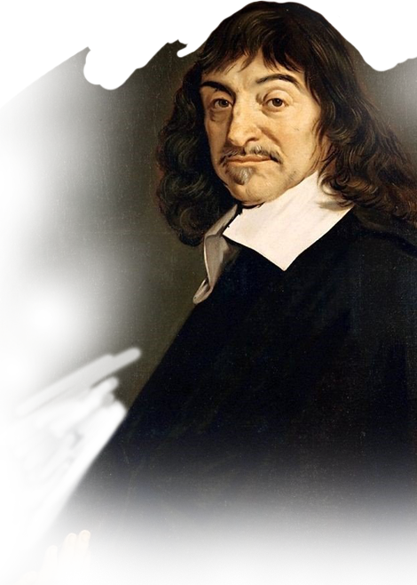
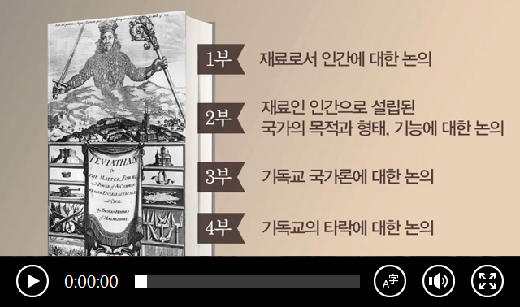
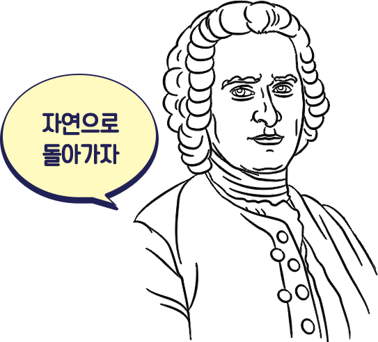
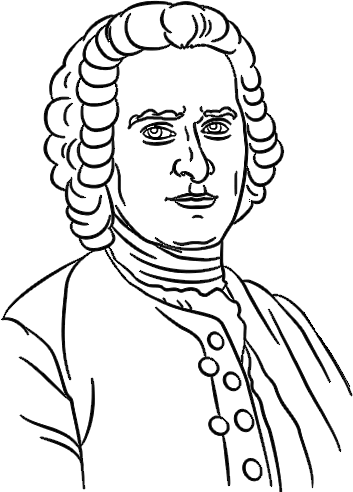
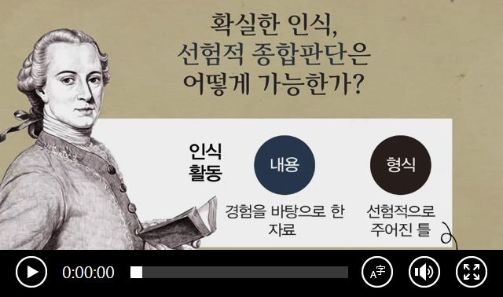

근대철학의 아버지 · 합리주의 철학
(1596-1650)근대 철학은 르네상스에서 20세기에 이르는 5세기 동안의 철학으로, 근대 철학이 시작되었을 때 세계사적 사건으로 큰 영향을 끼친 위대한 발명이 있었는데 바로 나침반, 인쇄술 그리고 지동설(코페르니쿠스) 이었습니다.
17세기 후반 영국에서 시작된 계몽주의는 경험을 중시하는 철학자들을 배출합니다. 근대 철학의 선두에 선 베이컨 (1561~1626) 이 강조한 경험에 기초한 이성적 사고 덕택에, 사람들은 자연을 지배할 수 있게 되었습니다. 로크(1632~1704), 흄(1711~1776), 루소(1712~1778) 등이 대표적인 경험주의 철학자입니다.
루이 14세가 집권한 프랑스에서는 모든 국민을 하나의 국가 체제로 통합하고 장악하려 했습니다. 이에 대한 반발로 자유와 평등을 찾아야 한다는 주장이 나오기 시작했습니다. 데카르트(1596~1650)를 중심으로 이성 중심의 합리론이 등장하게 된 배경입니다.
반면 독일에서는 칸트(1724~1804), 헤겔(1770~1831)로 대표되는 관념론이 등장합니다. 영국의 경험론과 대륙의 합리론을 종합한 칸트는 독일철학의 효시가 되어 유럽 사상계에 큰 파문을 일으켰습니다.
근대의 사람들은 무엇이든 확실하고 분명하게 설명하기를 원했습니다. 우리가 오래전부터 믿고 있던 것에 대해서도 정확한 원인과 결과를 알고 싶어 했지요. 이것이 근대적 합리 정신입니다. 르네 데카르트 또한 너무나 확실하고 분명한 철학적 답이 무엇인지를 찾기 위해 연구했으며, 바로 이것이 근대 철학의 시작입니다.

정치철학자
(1588-1679)
홉스가 청년기를 보냈던 시기는 정치적, 종교적으로 위태롭고 불안한 시대였습니다.
그의 관심사는 전쟁과 평화의 문제, 곧 국가의 문제였습니다.
그래서 국가란 무엇인가, 우리는 왜 국가권력에 복종해야 하는가 등의 질문에 대한 답을 찾아보려고 했습니다.
홉스는 영국 청교도혁명이 진행되던 시기에 『리바이어던』을 집필했고, 크롬웰 공화정이 수립된 직후 출간했습니다.
정치적 안정과 평화를 위해 필요한 국가권력을 밝혀보고자 했던 것입니다.

국가란 무엇인가? 「리바이어던」
합리주의 철학
(1632-1677)
사회계약론자
(1712-1778)
루소는 『사회계약론』에서 ‘일반의지에 따라 제정된 법률에 의거해서 통치가 이루어지는
공화주의 국가’를 설계하고 있습니다. 루소의 공화주의 사상은 프랑스혁명의 도화선이 되었고,
이후 근대 민주주의 정치질서를 성립하는 토대가 되었습니다.
루소의 사상은 흔히 ‘움직이는 타깃’으로 비유됩니다.
『에밀』에서는 교육자로, 『사회계약론』에서는 정치이론가로, 『쥘리 또는 신 엘로이즈』에서는
낭만파 문학의 기수 등 다양한 모습을 발견할 수 있습니다. 또 『인간불평등기원론』에서는
도덕철학자, 인류학자, 진화론자, 『학문예술론』에서는 문명비판가,『고백록』에서는
근대 최초의 고백문학의 창시자와 심리학자의 모습을 남겼습니다.


독일 철학자,비판철학
(1724-1804)

이성의 한계는 어디인가? 칸트 『순수이성비판』